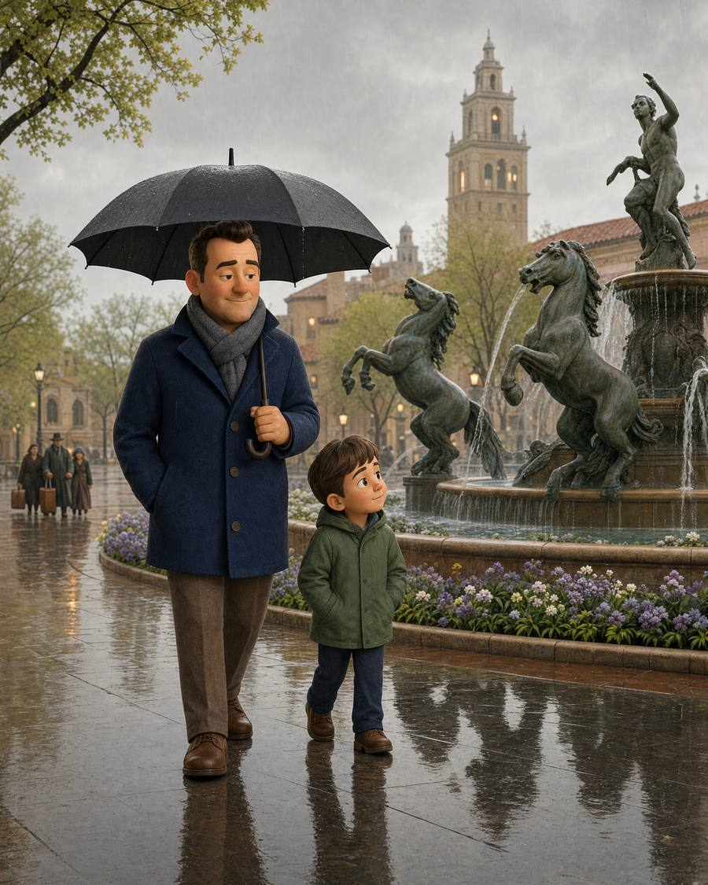

If April showers bring May flowers,
what do May flowers bring? Pilgrims.
April 2027
| S | M | T | W | T | F | S |
|---|---|---|---|---|---|---|
| · | · | · | · | 1 | 2 | 3 |
| 4 | 5 | 6 | 7 | 8 | 9 | 10 |
| 11 | 12 | 13 | 14 | 15 | 16 | 17 |
| 18 | 19 | 20 | 21 | 22 | 23 | 24 |
| 25 | 26 | 27 | 28 | 29 | 30 | · |
Kansas City has more fountains than any city but Rome — this bronze equestrian fountain on the Plaza is one of its most photographed.
A small huddle of cloaked travelers with old-fashioned luggage, arriving at the edge of frame — easy to miss on a first look, which is exactly the point.